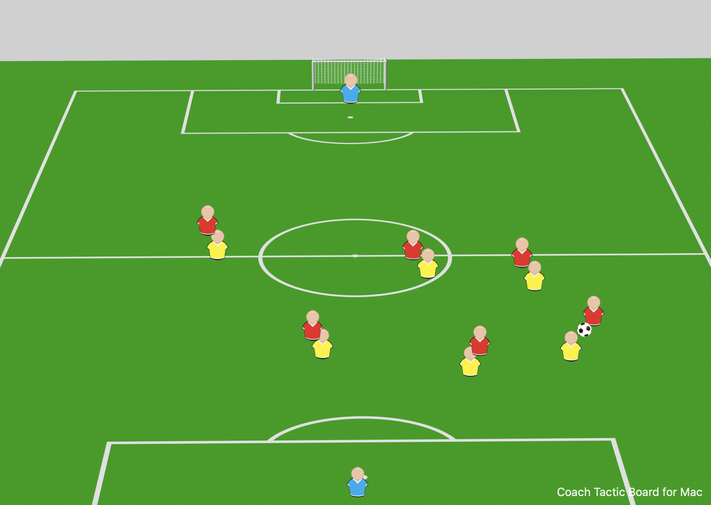

Indoor soccer demands constant movement, intelligent positioning, and relentless energy. With limited space and fast-paced action, understanding how to position yourself both offensively and defensively is crucial to dominating the game. Let's press the pace and make every second on the field count!
We play with 6 field players—and here's the key: even the defense plays offense. Everyone contributes to both phases of the game. When we have possession, we attack with numbers. When we lose possession, we defend with intensity.
When we're on offense, if there's no one to guard, we should be pressing. Push up the field and become an offensive weapon. We want to force the opposing team to play at our pace—fast, relentless, and overwhelming.
Watch: This video shows how we should position ourselves on offense. Notice how players press high and push into attacking positions while maintaining one defender for balance.
The end result: Organized offensive pressure with defensive coverage
Indoor soccer is a fast-paced game, and defense requires immediate reaction. When we lose possession, we all mark up instantly. No spectators—everyone has a job.
Critical Image: This shows how we mark up on defense. Everyone is covered, goal side. We move fast, communicate, and ensure no opponent is left open in dangerous areas.
One of the biggest mistakes players make is staying neutral when they don't have the ball. We need to elevate our play by constantly moving, making runs, and creating passing lanes for our teammates.
Watch: This video demonstrates off-ball movement—making intelligent runs and switches to create opportunities.
Remember: Movement off the ball is just as important as what you do with the ball. Be active, be aware, and make yourself available!
Here's our philosophy: Constantly move for 5 minutes, then sub out. We want to maximize our time on the field by playing at full intensity, then recovering so the next group can do the same.
Make it a goal to maximize every second on the field. When you're on, you're going full throttle—pressing, moving, attacking, defending. When you're off, you're recovering and preparing to do it again. This is how we win: with pace, intensity, and constant movement.